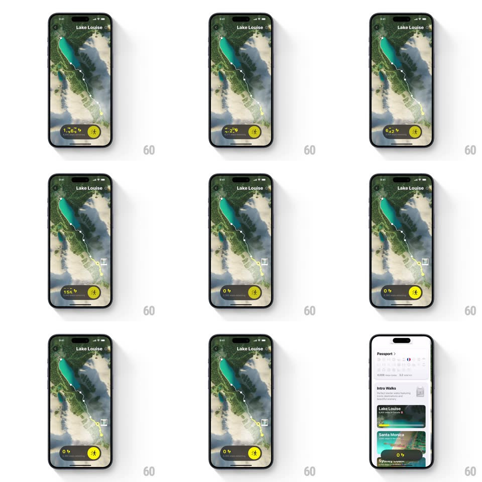

Media
Frame-by-frame

Rebuild this interaction 1:1: Walk the World's map hold - pressing and holding the 3D satellite map scrubs your step journey: a white trail draws along the route, milestone photo pins pop in, and the step counter ticks up, ending in a slide-to-dismiss back to the Passport list.

Rebuild this interaction 1:1: Walk the World's map hold - pressing and holding the 3D satellite map scrubs your step journey: a white trail draws along the route, milestone photo pins pop in, and the step counter ticks up, ending in a slide-to-dismiss back to the Passport list. ## Integration Integration: stack-agnostic spec - springs given as stiffness/damping, timed motions as duration + curve; map every value to your framework and animation library of choice. ## Scene Full-screen 3D satellite map (Lake Louise - turquoise lake, snow ridges, terrain tilt) with back chevron and title. Bottom: a dark pill showing the step count (1,608) and a yellow walker button. During hold: a white trail polyline draws through the terrain, milestone photo thumbnails pop along it, and the counter ticks. End state: the Passport sheet (Intro Walks list: Lake Louise, Santa Monica, Sydney) slides up. ## Motion spec Pattern: hold-to-scrub trail replay, gesture-driven. - Hold: pressing 300ms starts the scrub - the trail draws forward at ~600px/s (drawing, not fading) and the step counter ticks up continuously, ease-out on release. - Milestones: photo pins pop in as the trail head passes them (scale 0 -> 1, spring ~400/18) with a soft ping. - Camera: the map gently tilts and pans to follow the trail head (smooth follow, 200ms lag). - Release: the trail holds; the counter eases to a stop (400ms). Sliding down dismisses the map into the Passport sheet (350ms, ease-out). ## Calibration - Scrub speed follows hold pressure/duration - releasing pauses, re-holding resumes. - The trail is drawn on the terrain, hugging the 3D surface. ## Reduced motion Tap replays the trail over 2s without camera follow; pins appear with the trail. ## Don't miss - The counter and trail head stay in sync - the number never runs ahead of the line. - The yellow walker button stays put through the whole scrub.